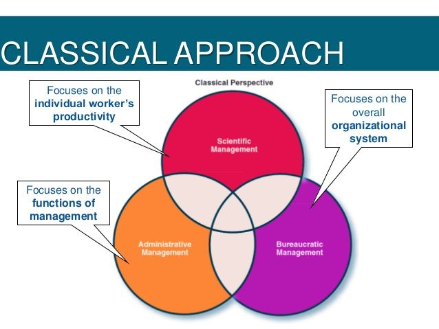

- Modern Management
The modern management approach combines concepts of the classical approach...
- Qaulity Magement
It is the standard of something as measured against other things of a...
Recent Post
Popular Post
Published in October 23, 2020
The classical approach in management has conventionally implied traditionally accepted views. This approach believes in functional interrelationships, following of certain principles based on experience, a bureaucratic structure, and a reward–punishment nexus. It is composed of three directions: the scientific management approach, the administrative approach, and the bureaucratic approach that are working side by side. The scientific approach focuses on a micro-segment in the organization, such as its workers, based on how they should do things inclined with science and evidence. Moreover, the administrative approach was designed for managers to plan, organize, command, coordinate, and control things inside the business. The bureaucratic approach, on the other hand, targeted the bigger picture and against favoritism and put the right person in a specific work. As mentioned, these are still present in today’s practices.
Read MorePublished in October 23, 2020

The neoclassical theory was an attempt at incorporating the behavioral sciences into management thought in order to solve the problems caused by classical theory practices. The premise of this inclusion was based on the idea that the role of management is to use employees to get things done in organizations. Rather than focus on production, structures, or technology, the neoclassical theory was concerned with the employee. Neoclassical theorists concentrated on answering questions related to the best way to motivate, structure, and support employees within the organization.
Studies during this time, including the popular Hawthorne studies, revealed that social factors, such as
employee relationships, were an important factor for managers to consider. It was believed that any
manager who failed to account for the social needs of his or her employees could expect to deal with
resistance and lower performance. Employees needed to find some intrinsic value in their jobs, which
they certainly were not getting from the job that was highly standardized. Rather than placing employees
into job roles, where they completed one specific task all day with little to no interaction with
coworkers, employees could be structured in such a way that they would frequently share tasks,
information, and knowledge with one another. The belief was that once employees were placed into this
alternate structure, their needs for socialization would be fulfilled, and thus they would be more
productive.